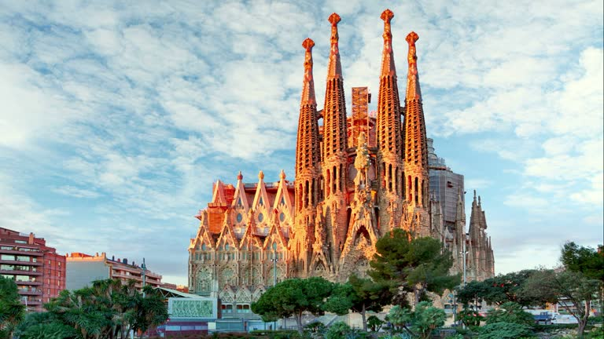
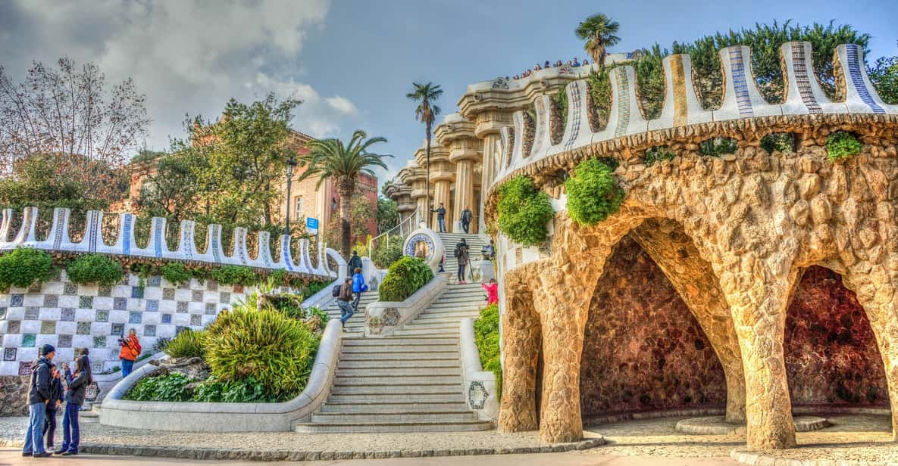
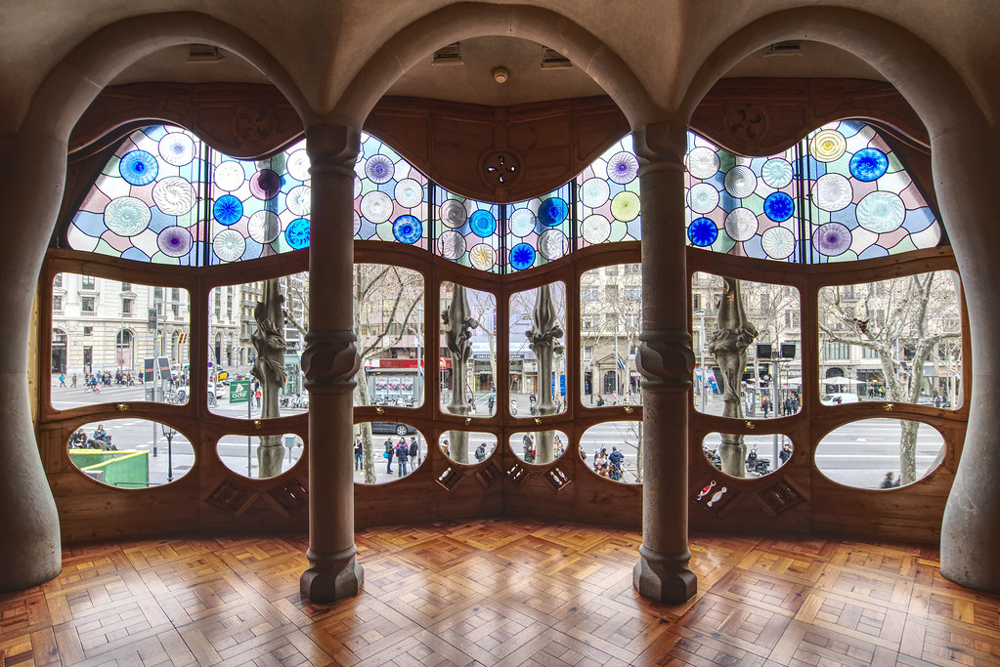

La Sagrada Familia
Designed by Antoni Gaudí, this iconic basilica is known for its stunning architecture and intricate details. It's a must-see landmark in Barcelona, still under construction after more than a century.

Designed by Antoni Gaudí, this iconic basilica is known for its stunning architecture and intricate details. It's a must-see landmark in Barcelona, still under construction after more than a century.

A colorful public park designed by Gaudí, offering whimsical mosaics, unique sculptures, and panoramic views of Barcelona. It’s a UNESCO World Heritage site full of creativity and nature.

This unique building, designed by Gaudí, is famous for its vibrant colors and organic shapes. It’s a masterpiece of modernist architecture and a UNESCO World Heritage site.